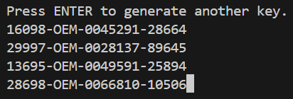
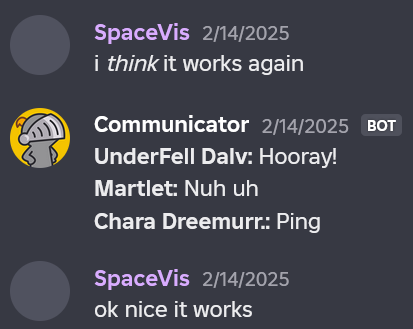
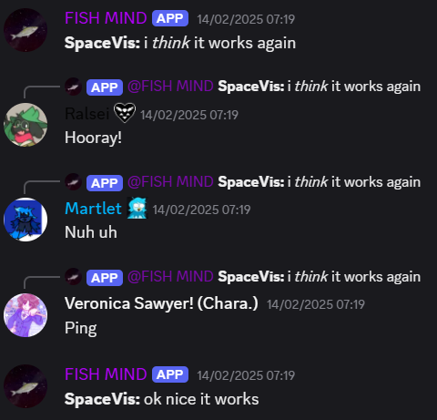
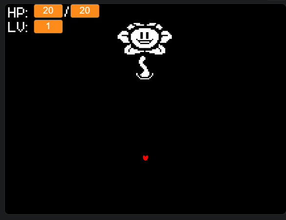

Windows 95-key generator
Een simpel python-bestand dat Windows 95-keys genereert.

Between-Disc-Guild
Een node.js script dat gebruik maakt van discord.js en guilded.js om berichten tussen een Discord- en een Guilded kanaal heen en weer te sturen.


"Scratchertale"
Een (ongelofelijk slechte) game die (soort van) gebruik maakt van Undertale's battle-systeem (eigenlijk alleen maar het deel waarbij je aanvallen moet ontwijken en dat dan 10 minuten lang).
